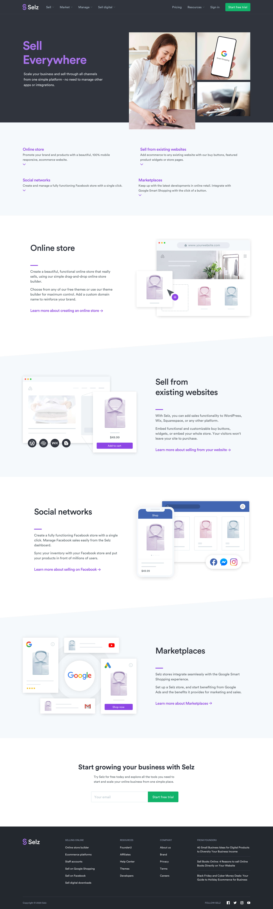
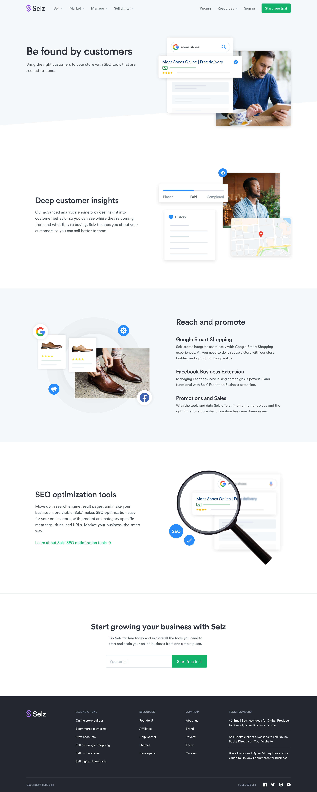
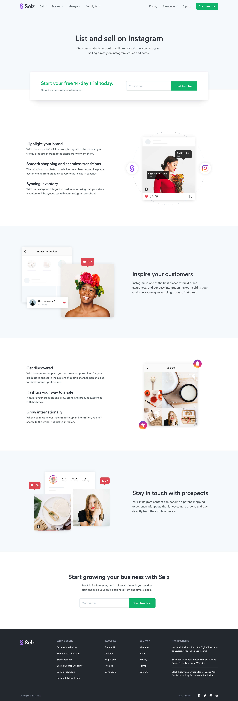

Selz was an ecommerce platform that empowered physical and digital product merchants to set up their online store and sell products online. The company expanded into more diverse merchant segments who were primarily selling physical products.
With this strategy, this project was started to rebrand the look and feel of the business to appeal more upscale merchants. It involved a broad range of visual redesign and enhancement across visual identity, website, digital and social channels.
(Selz was acquired by Amazon and the business is now operating under Amazon. The Selz brand itself no longer exists.)
Web • Branding

The primary element of the rebrand was the logo. With the complete makeover, the new logo aims to give a more modern look and feel.
The logomark, representing the letter 'S', is constructed in symmetry in order to give a sense of stability, security, harmony and balance.
The shape represents the concept of "exchange" or continuous flow of buying and selling (commerce).
The new colours are small adjustments from the previous, in order to maintain a certain level of continuation of previous Selz.
The new colour scheme has more saturation, which emphasizes the energy of the company's new direction.
The new homepage was designed to convey key sets of information in clearly defined sections that were accompanied with new feature images that match the updated brand visuals.
The new features pages were built in 3 tiers, dividing the huge amount of feature sets into easily digestible small pieces of content.
Tier 1
Tier 2
Tier 3
A wide variety of illustrative graphics was created in order to visually help customers understand the diverse and powerful features of the ecommerce platform.
The pricing page was enhanced from the previous design to match the new branding along with the addition of upsell features and services such as digital marketing management and business coaching.
BrickX